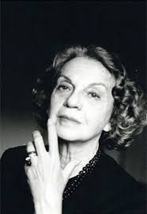

Álvares de Azevedo |
|

Poeta brasileiro |
BiografiaÁlvares de Azevedo (1831-1852) foi um poeta, escritor e contista, da Segunda Geração Romântica brasileira. Suas poesias retratam o seu mundo interior. É conhecido como "o poeta da dúvida". Faz parte dos poetas que deixaram em segundo plano, os temas nacionalistas e indianistas, usados na Primeira Geração Romântica, e mergulha fundo em seu mundo interior. É Patrono da cadeira n.º 2, da Academia Brasileira de Letras. |
Livros mais famosos:Macário, obra dramática, (1850) Lira dos Vinte Anos, poesia (1853) A Noite na Taverna, prosa (1855) O Conde Lopo, poesia (1866) |
|
Poesias de Álvares de Azevedo:Adeus, Meus Sonhos A Lagartixa Ai, Jesus! Amor |
|
Machado de Assis |
|
|
Escritor brasileiro |
BiografiaMachado der assis (Joaquim Maria Machado de Assis), jornaliata, contista, cronista, romancista. poeta e teatrólogo, nasceu no Rio de Janeiro, RJ, em 21 de junho de 1839, e faleceu também no Rio de Janeiro, em 29 de setembro de 1908, Ê o fundador da cadeira nº 23 da Academia Brasileira de Letras. |
Livros mais famosos:Ressurreição (1872) Dom Casmurro(1899) Memórias Póstumas de Brás Cubas (1880) O Espelho (1882) |
|
Poesias de Machado de Assis:Carolina A uma senhora que me pediu varsos Livros e flores No alto |
|
Lima Barreto |
|
|
Jornaliata brasileiro |
BiografiaAfonso Henrique de Lima Barreto, mais conhecido como Lima Barreto foi jornalista e escritor brasileiro, que publicou romances,sátira,contos, crónicas e uma obra em periódicos, principalmente em revistas populares ilustradas e periódicos anarquistas do inicio do século XX. Lima Barreto nasceu em 13 cde maio de 1881 no Rio de Janeiro, e faleceu em 1 de Novembro de 1922, Rio de Janeiro. |
Livros mais famosos:Recordações de Escrivão Isaias Caminha (1909) Triste Fim de Policarpo Quaresma (1911) As Aventuras do Dr. Bogoioff (1912) Nunca e a Ninfa (1915) |
|
Carolina de Jesus |
|
|
Escritora brasileira |
BiografiaCarolina Maria de Jesus foi uma escritora, compositora e poetisa brasileira, conhecida por seu livro "Quarto de Despejo: Diário de uma Favelada" publicado em 1960. Carolina de Jesus foi uma das primeiras escritoras negras do Brasil e é considerada uma das mais importantes escritoras do país. nasceu em 14 março de 1914, Minas Gerais e faleceu em 13 fevereiro de 1977, São Paulo. |
Livros mais famosos:Quarto de Despejo: Diário de uma Favaleda(1960) Casa de Alvanaris: Diário de uma Ex-Favaleda (1961) Pedaços de Fome (1963) Provérbios (1962) |
|
Póstumas:Diário de Bitita (1977) Um Brasil para Brasileiros (1982) Meu EStranho Diário (1996) Onde Estaes Felicidade (2014) |
|
Manoel de Barros |
|
|
Poeta brasileiro |
BiografiaManoel Wenceslau Leite de Barros foi um poeta brasileiro do século XX, pertencente, cronologicamente à Geração de 45, mas formalmente ao pós-Modernismo brasileiro, se situando mais próximo das vanguardas europeias do início do século e da Poesia Pau-Brasil e da Antropofagia de Oswald de Andrade. nasceu em 19 de dezembro de 1915, faleceu em 13 Novembro de 2014 Cuiabá, Matp Grosso, Campo Grande, Mato Grosso do sul. |
Obras mais famosas:Poemas concebidos sem pecado (1937) Face imóvel (1942) Poesias (1956) Compêndio para uso dos pássaros (1960) |
|
Prêmios:Prêmio Orlando Dantas - Diário de Notícias, com o livro Compêndio para uso dos pássaros (1960) Prêmio Nacional de poesias, com o livro Gramática expositiva do chão (1966) Prêmio da Fundação Cultural do Distrito Federal, com o livro Gramática expositiva do chão (1969) Prêmio Jabuti de Literatura, na categoria Poesia, como o livro O guardador de águas (1989) |
|
Ernest Hemingway |
|
|
Escritor norte-americano |
BiografiaErnest Miller Hemingway foi um escritor norte-americano. Trabalhou como correspondente de guerra em Madri durante a Guerra Civil Espanhola. Esta experiência inspirou uma de suas maiores obras, Por Quem os Sinos Dobram. Ao fim da Segunda Guerra Mundial, se instalou em Cuba. nasceu em 21 de junho de 1899 em Oak Park, Illinos EUA e faleceu em junho de 1961 em Ketchum, Idaho EUA. |
Romances mais famosos:The Torrents of Spring (1925) The Sun Also Rises (1926) A Farewell to Arms (1929) To Have and Have Not (1937) |
|
Contos e pequenas estórias:Three Stories and Ten Poems (1923) In Our Time (1925) Men Without Women (1927) The Snows of Kilimanjaro (1932) |
|
Vidiadhar Naipaul |
|
|
Escritor britânico |
BiografiaDe família indiana, filho de um pai jornalista frustado, a sua terra natal é Trindade e Tobago, nas Caraíbas. Aos 18 anos, em 1950 viajou para Londres, onde foi para estudar literatura em Oxford, com uma bolsa de estudo da comunidade indiana a que pertencia a sua família em Port of Spain. As memórias da rua onde viviam os avós, em Port of Spain, Miguel Street, foram o seu primeiro livro, escrito quando era correspondente free-lancer da BBC para os assuntos das Caraíbas. Foi condecorado como Cavaleiro em 1990. Em 2001 recebeu o Nobel de Literatura. |
Ficções mais famosas:The Mystic Masseur (1957) The Suffrage of Elvira (1959) Miguel Street (1961) A House for Mr Biswas (1963) |
|
Não Ficção:An Area of Darkness (1964) The Loss of El Dorado (1969) The Overcrowded Barracoon and Other Articles (1972) India: A Wounded Civilization (1977) |
|
Jean-Paul Sertre |
|
|
Filósofo francês |
BiografiaJean-Paul Charles Aymard Sartre foi um filósofo, escritor e crítico francês, conhecido como representante do existencialismo. Acreditava que os intelectuais têm de desempenhar um papel ativo na sociedade. Era um artista militante, e apoiou causas políticas de esquerda com a sua vida e a sua obra. Nascimento: 21 de junho de 1905, Paris, França. Falecimento: 15 de abril de 1980, Paris, França. |
Obras:L'imagination (1936) La transcendance de l'égo (1937) La nausée (1938) Le mur (1939) |
|
Umberto Eco |
|
|
Escritor italiano |
BiografiaUmberto Eco foi um escritor, filósofo, semiólogo, linguista e bibliófilo italiano de fama internacional. Foi titular da cadeira de Semiótica e diretor da Escola Superior de ciências humanas na Universidade de Bolonha. Nascimento: 5 de janeiro de 1932, Alexandria, Itália. Falecimento: 19 de fevereiro de 2016, Milão, Itália. |
Romances:O Nome da Rosa(1980) A misteriosa chama da rainha Loana (2004) O Cemitério de Praga (2011) Baudolino (2000) |
|
Prêmios:Prêmio Strega Ordem Nacional da Legião de Honra Ordem das Artes e das Letras Prêmio Médicis Estrangeiro |
|
Sophia de mello Breynar Andresen |
|
|

Poetisa portuguesa |
BiografiaSophia de Mello Breyner Andresen foi uma das mais importantes poetisas portuguesas do século XX. Foi a primeira mulher portuguesa a receber o mais importante galardão literário da língua portuguesa, o Prémio Camões, em 1999. O seu corpo está no Panteão Nacional desde 2014 e tem uma biblioteca com o seu nome em Loulé. Wikipédia Nascimento: 6 de novembro de 1919, Porto, Portugal,Falecimento: 2 de julho de 2004, Lisboa, Portugal. |
Contos:Contos Exemplares (1962, Lisboa, Livraria Morais Editora; 24.ª ed. 1991) Histórias da Terra e do Mar (1984, Lisboa, Edições Salamandra; 3.ª ed., Lisboa, Texto Editora, 1989) |
|
Poemas:No Tempo Dividido (1954) Mar Novo (1958) Livro Sexto (1962) O Cristo Cigano (1961) |
|